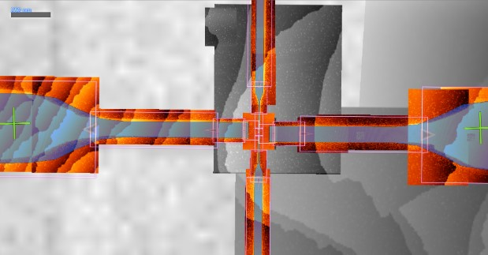

Case Studies
Featured Works
Deep dives into atomic-scale research, machine learning automation, and satellite software-defined radio development.

Ph.D. / NIST
Engineering at the atomic scale
High-Frequency Oersted Lines for Spin Manipulation
Designing and fabricating 40 GHz microwave delivery structures for single-dopant quantum devices in silicon.

CV & Machine Learning
Autonomous Fabrication
Automated STM Hydrogen Lithography
Developing computer vision and ML algorithms to automate atom-by-atom fabrication using scanning tunneling microscopy.
Aerospace / Space
From hardware design to orbital deployment
Modular Nanocom Software Defined Radios (SDRs)
Architecting flight-ready satellite SDR firmware, Zynq FPGA HDL, and automated physical testing for space missions.